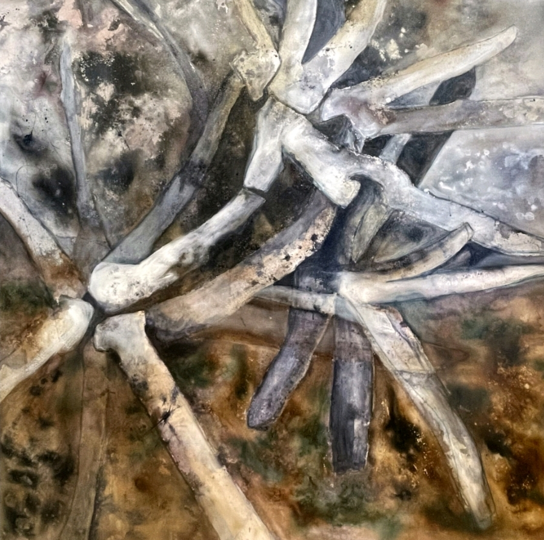
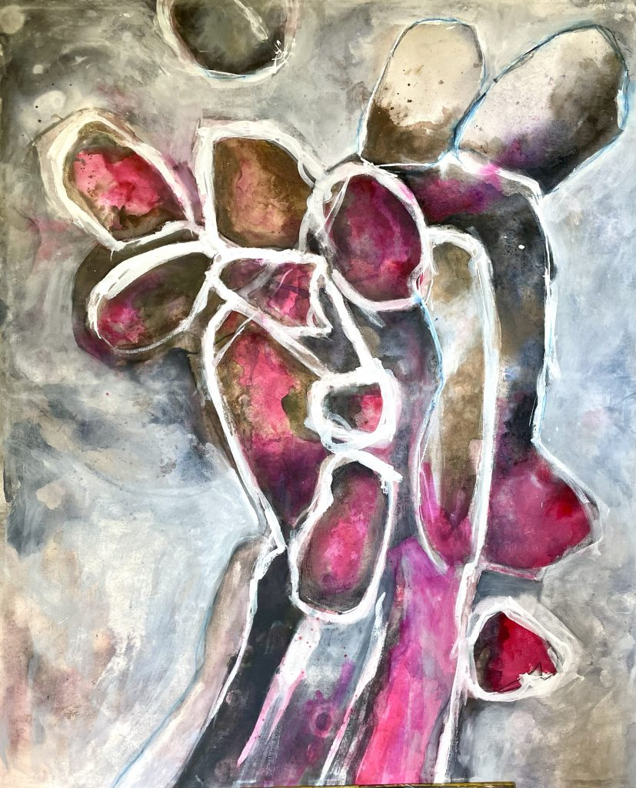
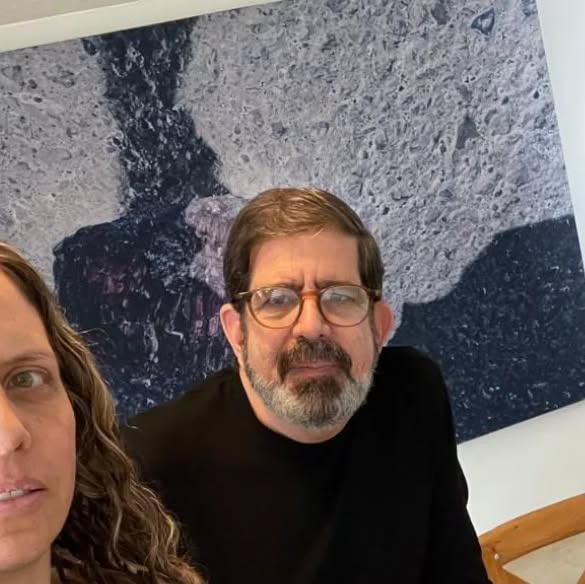
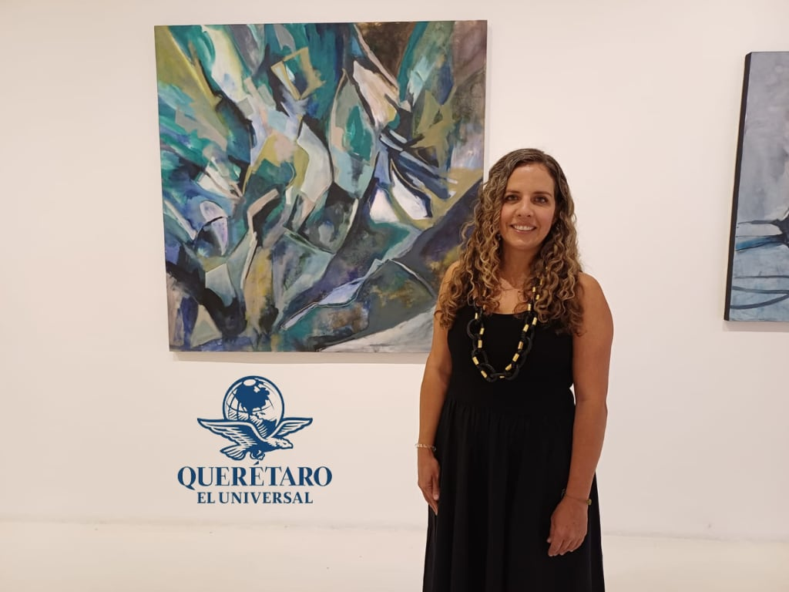

Press

Shelly Sarfati

Heme aquí. Shelly Sarfati, México

Shelly Sarfati — Heme aquí

Heme aquí: Shelly Sarfati y la fuerza del cactus
Textos
Una selección de textos curatoriales que ofrecen distintas miradas sobre la obra de Shelly Sarfati, sus procesos y su universo visual.